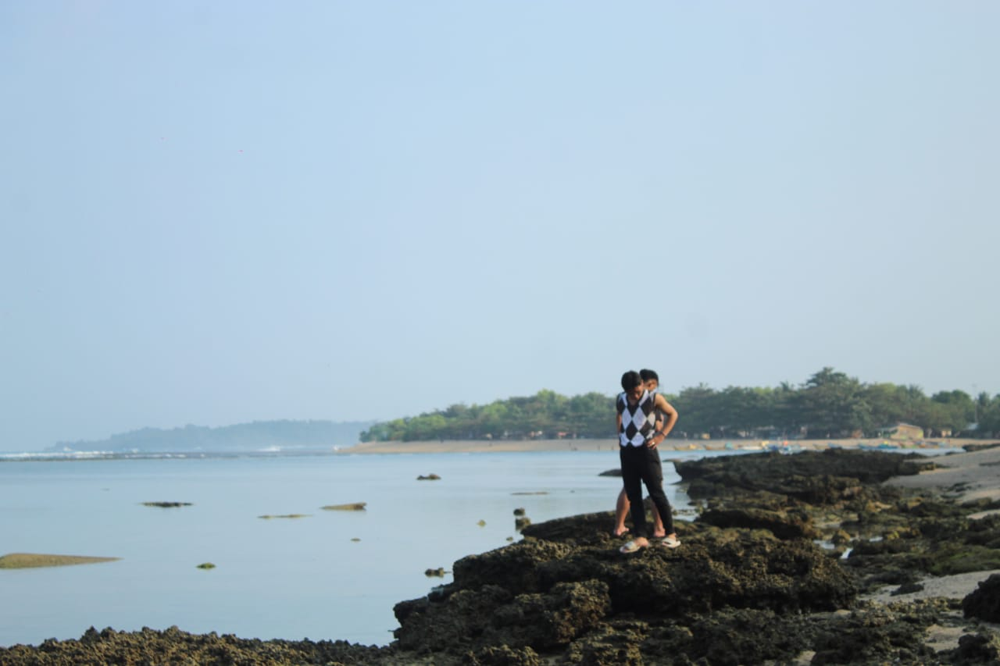

Tentang Kami
Ini merupakan bagian dari seorang Azzahrah Salsa Shabirah ia merupakan seorang anak Perempuan pertama , anak ke satu dari dua bersaudara. Lahir pada 19 juli 2003 di Jakarta, Jenjang pendidikan yang pernah dilalui dan sedang dilakukan : SDN kampung Melayu,SMPN 62 Jakarta,SMK Jakarta timur 1, STT Nurul Fikri.
Media Sosial : IG (moccacino__21), FB (slsbhira), GitHub (azzahrah salsa shabirah), Silahkan dicek jika ingin
mengenalnya lebih jauh pada media sosial yang tertera.
Ini merupakan bagian dari seorang Fakhriza Ahmad Taqiyyuddin ia merupakan seorang anak Laki-laki keempat , anak ke empat dari lima bersaudara. Lahir pada 10 Oktober 2004 di Bekasi, Jenjang pendidikan yang pernah dilalui dan sedang dilakukan : SDIT Al-Husnayain, SMPIT dan MA di Pondok Pesantren Modern Al-Hassan, STT Nurul Fikri.
Media Sosial : IG (fakhrizaay__), WA (0838 kapan-kapan kita kenalan) GitHub (fakhrizaahmadtaqiyyuddin),
Silahkan dicek jika ingin mengenalnya lebih jauh pada media sosial yang tertera.
Ini merupakan bagian dari seorang Bintang Fausta Listiantoia merupakan seorang anak laki-laki kedua, anak ke dua dari empat bersaudara. Lahir pada 23 Mei 2004 di Jakarta, Jawa Barat. Jenjang pendidikan yang pernah dilalui dan sedang dilakukan : SDN Pamulang Indah, SMP Ibnu Umar Tahfidzh Boarding School, SMA Plus Liwaul Furqon, STT Nurul Fikri.
Media Sosial : IG (bintang.faust), GitHub (Bintangfausta), Silahkan dicek
jika ingin mengenalnya lebih jauh pada media sosial yang tertera.
Ini merupakan bagian dari seorang Imaduddin Abdur Rahman ia merupakan seorang anak
laki-laki, anak ke enam dari enam bersaudara.
Lahir pada 01 Mei 2002 di Jakarta, DKI Jakarta. Jenjang pendidikan yang pernah dilalui dan sedang
dilakukan : SDN Tengah 08 DKI Jakarta, SMPN 223 Jakarta, SMK Negeri 10 Jakarta STT Nurul Fikri.
Media Sosial : IG mad_qq22, FB Imaduddin Abdurrahman, GitHub imaduddin007, Silahkan
dicek jika ingin mengenalnya lebih jauh pada media sosial yang tertera.
Azzahrah Salsa Shabirah

Fakhriza Ahmad Taqiyyuddin

Bintang Fausta Listianto